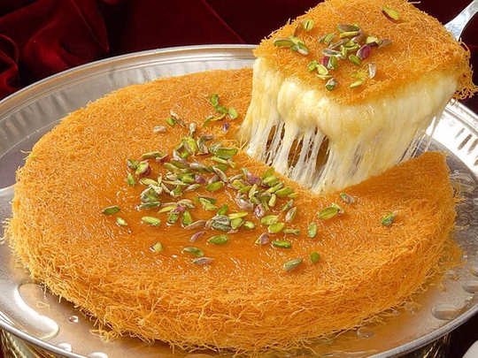

Kunafah

A Palestinian and Middle Eastern Dessert
Kunafa is the ultimate Middle Eastern dessert. A luscious, crunchy, and buttery shredded fillo (phyllo) enclosing the most creamy silky milk pudding and drizzled with fragrant simple syrup.
It can be either made with a creamy filling or with cheese this recipe we will be making the creamy filling version
Ingredients
- Milk
- Heavy Cream
- Condensed milk
- Kunafa dough
- Sugar
- Cornstarch
- Butter
- Pistachio powder
Recipe Instructions
- Preheat the oven to 200C.
- Put the Kunafa dough in a large bowl, then use your hands to tear it or use kitchen scissors to cut it into 2-3 cm strips. Try to separate the individual strands from each other. When you have a pile of fine strips of Kunafa, pour the melted ghee on top of it, and mix it thoroughly (rub the dough with ghee using your hands).
- Grease a 10-inch baking pan with butter. Spread the butter well in the bottom and the sides of the pan.
- Grap a handful of Kunafa dough and add it to the pan, fluff it up while adding it, so you don't get any clumps. Keep adding it until you cover the pan bottom with the dough. After that, use any heavy object such as a measuring cup to press on it until you get a flat layer.
- Now add more dough around the edges of the tray and press on them as well.
- Pour the cream filling in the centre of the pan and spread it out over the first layer. Once the cream is spread, fold in any excess dough walls down over the layer.
- Start gently covering the cream layer with the rest of Knafeh. Once you have created a thin layer on the top, press it down gently using both your hands (don't press on it so hard that the cream comes out). Sprinkle some melted ghee on the top (optional).
- As soon as you remove the it from the oven, pour the syrup evenly over the top. You will hear a sizzle as you pour the syrup into the Kunafa. Let it sit for 10 minutes so all the syrup is absorbed.
Place a serving plate over the baking pan, and flip it onto the plate.
Decorate it with the chopped pistachio, then cut it and serve.